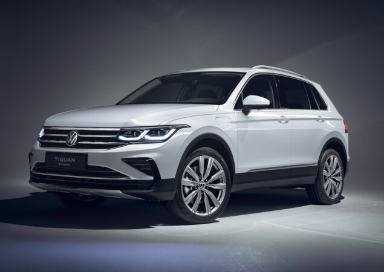

Volkswagen Tiguan R-Line
O modelo R Line tem o aclamado motor 2.0 TSI da família EA888, o mesmo usado em outros carros da Volkswagen como os extintos Golf GTI e Passat.
- Teto Solar Panoramico
- Auto Parking
- Motor Turbo 2.0
- Android Auto e Apple Car Play
- 5 lugares